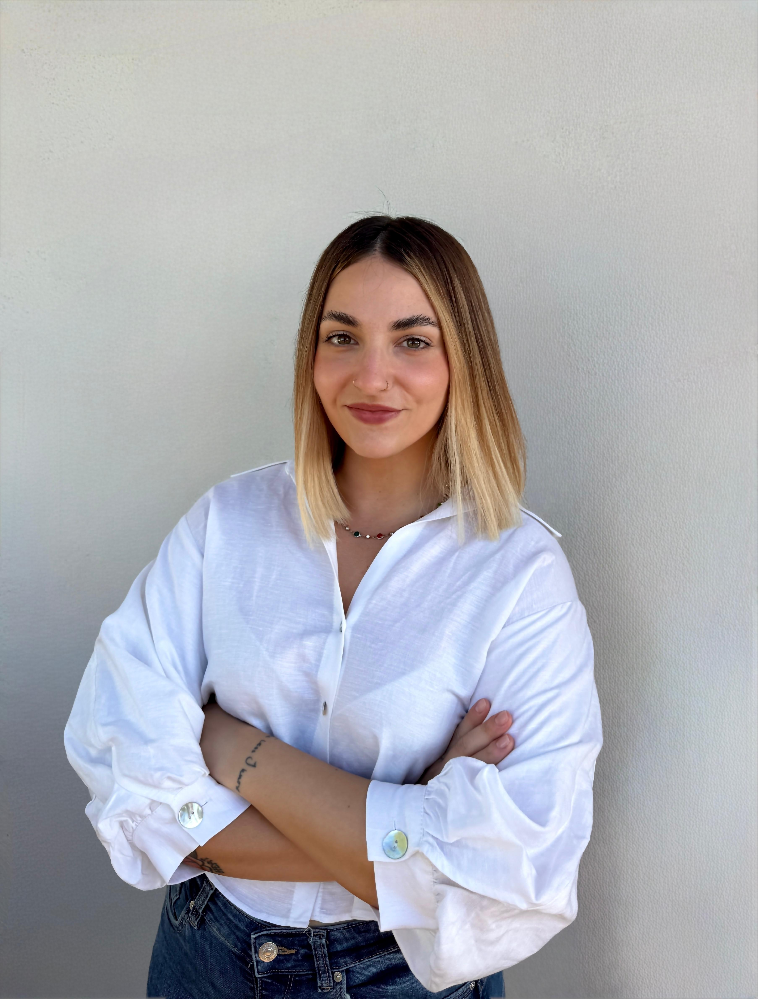

Giulia Verghini. Unisco una formazione umanistica a competenze di project management, innovazione e intelligenza artificiale, lavorando all'intersezione tra persone, strategia e tecnologia. Giulia Verghini. I combine a humanities background with project management, innovation and artificial intelligence, working at the intersection of people, strategy and technology.
Più la capacità tecnica si diffonde, meno è sufficiente da sola. Ciò che fa la differenza è la capacità di comprendere il contesto, orientare il confronto e costruire allineamento tra persone e competenze diverse. The more technical capability spreads, the less it is enough on its own. What makes the difference is the ability to understand context, steer the conversation and build alignment between different people and skills.

Mondi che sembrano distanti. È nel passaggio dall'uno all'altro che ho imparato a tradurre linguaggi, prospettive e bisogni diversi. Worlds that look distant. It's in the passage from one to the next that I learned to translate different languages, perspectives and needs.
Cinque tappe, due certificazioni. Apri una voce per scoprire competenze, strumenti e insegnamenti che ne ho tratto.Five steps, two certifications. Open an item to discover the skills, tools and lessons I drew from each.